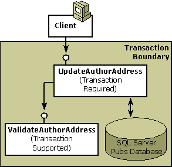

In this step, you will learn about the following:
Step 1: Creating a Transactional Component shows how to write a simple transactional component that updates author information in the Microsoft SQL Server Pubs database. Step 2 shows what happens when a transaction is extended across multiple components.
In keeping with the COM+ programming model, UpdateAuthorAddress calls another component in the course of completing its work. The second component, ValidateAuthorAddress, validates the author's address and returns the results to its caller, UpdateAuthorAddress.
Unlike its caller, ValidateAuthorAddress does not require a transaction, but it can still participate in its caller's transaction. In this step, its transaction attribute value is set to Supported, as shown in the following illustration, which extends the existing transaction to the new object.

The Supported attribute value extends (or flows) an existing transaction only when the caller is transactional. When UpdateAuthorAddress calls ValidateAuthorAddress, COM+ first looks at the caller's context to see whether it is transactional. COM+ then looks at the service attributes that are set on ValidateAuthorAddress and assigns the new object the same transaction identifier that is assigned to the caller object. To better understand this process, see Context Activation.
Because they share the same transaction identifier, both objects must complete their work successfully or COM+ aborts the transaction (undoing any changes made to the Pubs database).
All objects participating in a transaction vote to either commit or abort the transaction. Voting occurs explicitly when you include voting instructions in your code, as shown in the following extraction from the Step 1 Sample Code, which creates the UpdateAuthorAddress component:
' Everything works.
contextstate.SetMyTransactionVote TxCommit
contextstate.SetDeactivateOnReturn True
Exit Sub
UnexpectedError:
' There's an error.
contextstate.SetMyTransactionVote TxAbort
contextstate.SetDeactivateOnReturn True
Voting also occurs implicitly, as is done in the ValidateAuthorAddress component. Unless the object declares otherwise, COM+ assumes an object has completed its work successfully but that it is not ready to be deactivated. COM+ makes the following assumption:
contextstate.SetMyTransactionVote TxCommit
contextstate.SetDeactivateOnReturn False
When ValidateAuthorAddress returns to its caller, COM+ reads its vote as a commit. COM+ doesn't count the votes until it deactivates the root object, which is the first object in the transaction in this case, the UpdateAuthorAddress object.
The ValidateAuthorAddress component makes a simple check of the author's address. Because UpdateAuthorAddress does not vote explicitly, COM+ uses the default vote settings.
Option Explicit
'
' Purpose: This class is used for validating an author's address
' (presumably right before updating that address in the
' database).
'
' Notes: This component could be in a transaction or not; it doesn't
' matter because it doesn't touch any data in a database.
'
Public Function ValidateAuthorAddress( _
ByVal strAddress As String, _
ByVal strCity As String, _
ByVal strState As String, _
ByVal strZip As String) As Boolean
' Default is to validate unless something is found to be wrong.
ValidateAuthorAddress = True
' Invalidate authors who live in New York City
' and authors who live in Montana.
'
If strCity = "New York" And strState = "New York" Then
ValidateAuthorAddress = False
ElseIf strState = "Montana" Then
ValidateAuthorAddress = False
End If
' Done
End Function
Setting a component's transaction attribute to Supported can result in the new object being created in the calling object's transaction. COM+ looks at the caller's context to determine the transactional status of the new object. If the caller is transactional, COM+ flows the transaction to the new object.
All objects participating in the same transaction share a common transaction identifier, which COM+ reads from the object's context.
Each object in a transaction votes independently of other objects. COM+ counts the votes when the root object is deactivated.
You can toggle an object's transaction vote between commit and abort until COM+ deactivates the object or until COM+ deactivates the root object and ends the transaction. Only the last vote setting counts. The IContextState and IObjectContext interfaces provide methods and that produce similar voting results as shown in the following table. You can use either interface to vote explicitly in a transaction.
| IContextState combination methods | IObjectContext equivalent method |
|---|---|
| SetMyTransactionVote txVote = TxCommit SetDeactivateOnReturn bDeactivate = True | SetComplete |
| SetMyTransactionVote txVote = TxCommit SetDeactivateOnReturn bDeactivate = False | EnableCommit |
| SetMyTransactionVote txVote = TxAbort SetDeactivateOnReturn bDeactivate = True | SetAbort |
| SetMyTransactionVote txVote = TxAbort SetDeactivateOnReturn bDeactivate = False | DisableCommit |
COM+ sets an object's vote to the equivalent of EnableCommit unless the component votes explicitly.
Voting explicitly can reduce the overall duration of the transaction and release expensive resource locks.